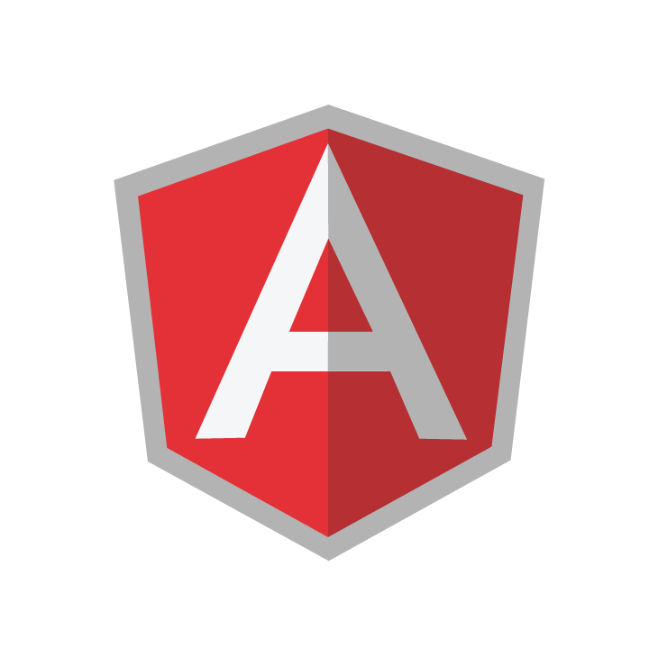

<% styles.forEach( function ( file ) { %>
<% }); %>
<% scripts.forEach( function ( file ) { %>
<% }); %>
language
{{ opt.name }}

home {{"Item_Menu_1" | translate}}
info {{"Item_Menu_2" | translate}}
book {{"Item_Menu_3" | translate}}
{{"Item_Menu_4" | translate}}
question_answer {{"Item_Menu_5" | translate}}